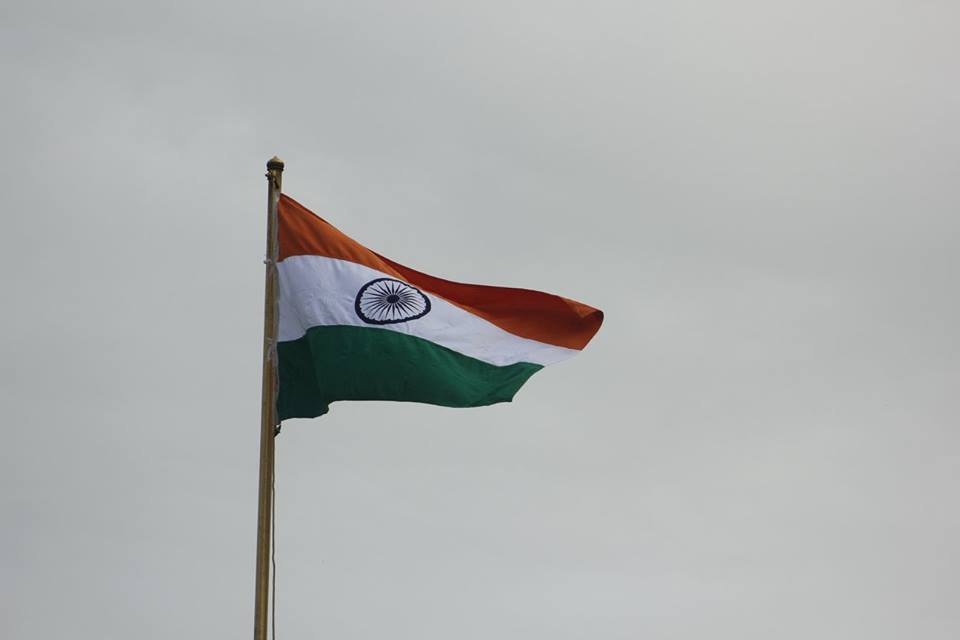
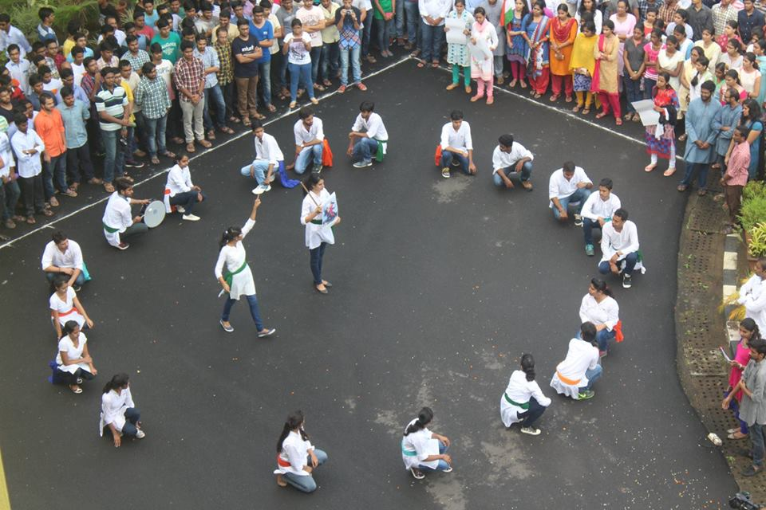
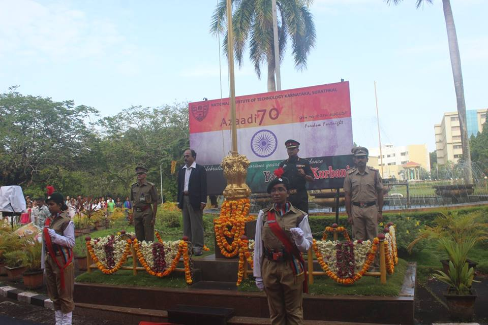
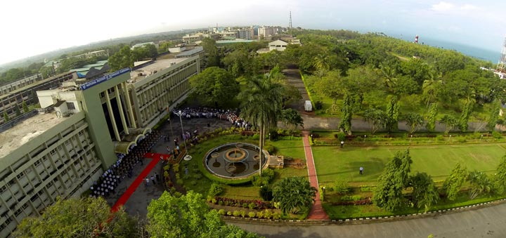
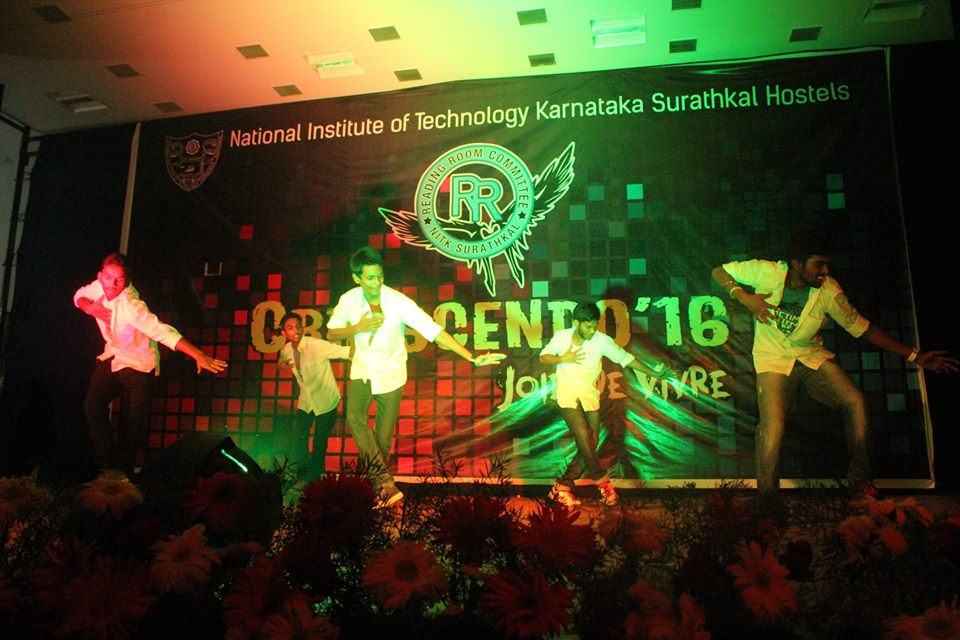
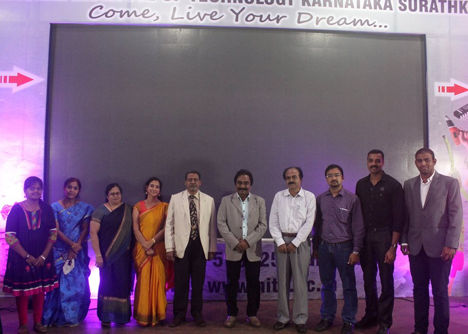
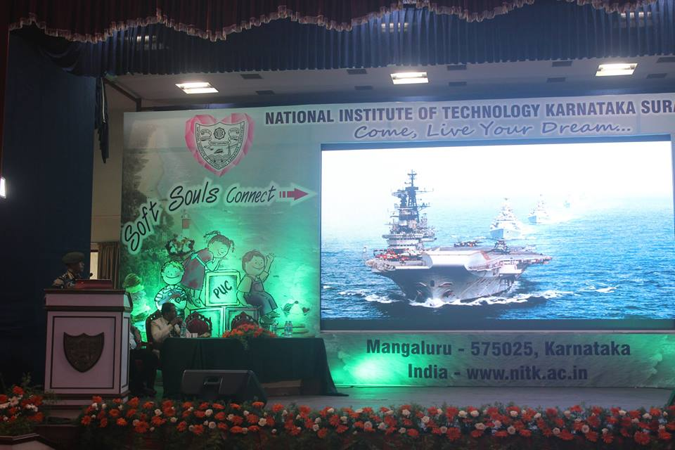
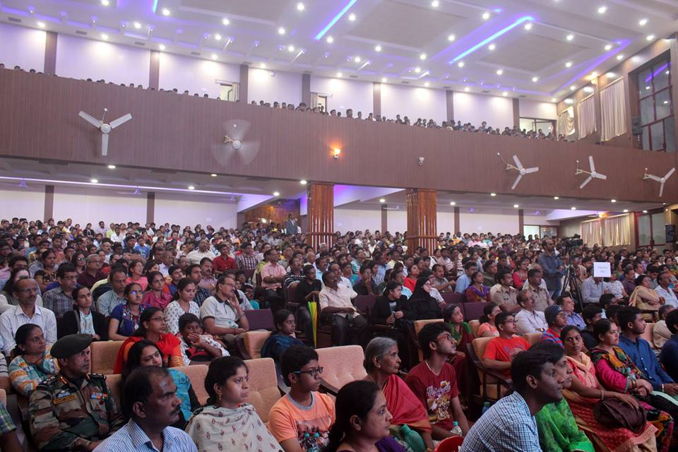
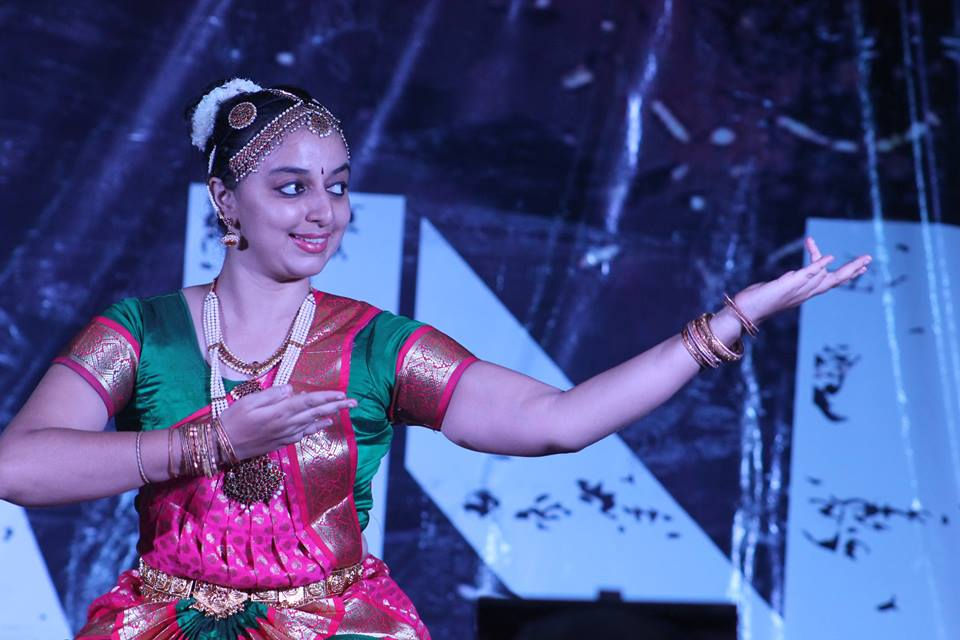

The hostel events that are performed in NITK are:
- CRESCENDO, the intra-institute cultural festival organized by the NITK Hostellers. Its like a mini Incident which provides a nice platform to exhibit and showcased the innate social and cultural talents and gives many others a chance to try something new for the first time.
- PHOENIX, the annual sports meet organized at institute level. This adventuring sporting event organized by the hostellers
- BHARATH DARSHAN, the festival celebrating the cultural diversity of India has been conducted as regular features of the Annual Calendar of the Students Council. In this students exhibit the different cultural events of all the states of India thereby built an ultimate platform of social and cultural exchange.
- The National Institute of Technology Karnataka (NITK) was founded on the western shores of the Indian peninsula close to the city of Mangalore in the year 1960, and since then it has been galvanizing the countless curious minds that have passed through its gates. Since its inception its spreading the message of cultural heritage by means a vibrant cultural festival called as Cultural Week in the premises which attracted a huge response from the nearby districts of Dakshina Kannada. To its credit events like State Level Kannada Drama competition and many other cultural exchange programmes were also a part of it. It was the only institute at that time to invite talented students and to showcase their talents in and around the districts.
- Intra College Sports meet like freshers cup and inter department leaguges will be organized by Recreation Committee.